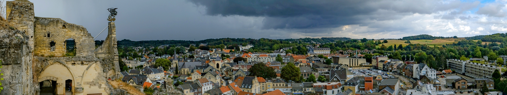

Kasteelruine Valkenburg - de hotspot van Zuid Limburg!

Achtergrondinformatie
Kasteel Valkenburg is een kasteelruïne in het Zuid-Limburgse vestingstadje Valkenburg. De voor Nederland zeldzame hoogteburcht ligt op de Heunsberg,
een uitloper van het plateau van Margraten. Het kasteel, ooit de burcht van de heren van Valkenburg, werd in 1672 verwoest maar nooit geheel afgebroken.
Onder het kasteel bevinden zich diverse vluchtgangen en ligt de Kasteelgroeve. De Valkenburgse kasteelruïne is een belangrijke toeristische attractie
en sinds 1967 een beschermd rijksmonument. www.wikipedia.nl